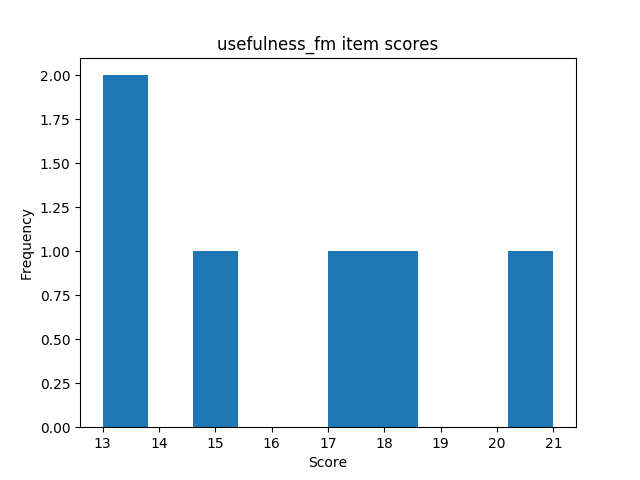
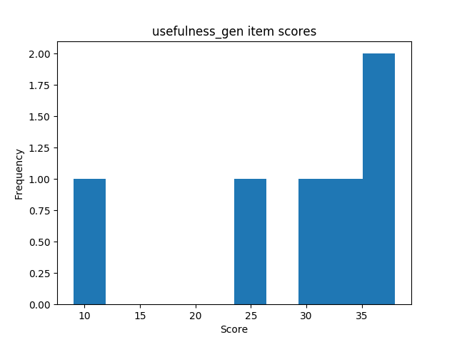
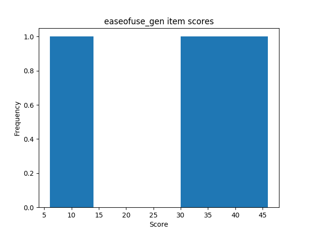

| sample | min | max | mean | variance | skew | kurtosis | normal-t | normal-p | α | |
|---|---|---|---|---|---|---|---|---|---|---|
| ctt | 12 | -4 | 14 | 6.50 | 27.36 | -0.57 | -0.52 | 1.144 | 0.5643 | 0.6432 |
| irt | 12 | -5 | 1 | -0.16 | 4.40 | -1.89 | 3.15 | 17.284 | 0.0002 | 0.6263 |
| sample | min | max | mean | variance | skew | kurtosis | normal-t | normal-p | α | |
|---|---|---|---|---|---|---|---|---|---|---|
| ctt | 11 | 0 | 13 | 8.82 | 15.16 | -1.05 | 0.32 | 4.698 | 0.0955 | 0.6777 |
| irt | 11 | -3 | 1 | -0.15 | 1.89 | -1.41 | 1.44 | 9.670 | 0.0079 | 0.5298 |

| sample | min | max | mean | variance | skew | kurtosis | normal-t | normal-p | α | |
|---|---|---|---|---|---|---|---|---|---|---|
| ctt | 23 | -4 | 14 | 7.61 | 21.98 | -0.86 | -0.02 | 3.864 | 0.1448 | 0.6509 |
| irt | 23 | -5 | 1 | -0.11 | 2.60 | -2.24 | 5.87 | 27.773 | 0.0000 | 0.5621 |
 
| sample | min | max | mean | variance | skew | kurtosis | normal-t | normal-p | α | |
|---|---|---|---|---|---|---|---|---|---|---|
| ctt | 12 | -4 | 17 | 6.58 | 38.08 | -0.26 | -0.62 | 0.232 | 0.8904 | 0.8794 |
| irt | 12 | 0 | 4 | 0.91 | 1.87 | 1.08 | 0.52 | 5.358 | 0.0686 | 0.2295 |

| sample | min | max | mean | variance | skew | kurtosis | normal-t | normal-p | α | |
|---|---|---|---|---|---|---|---|---|---|---|
| ctt | 11 | 0 | 19 | 8.27 | 26.22 | 0.50 | 0.12 | 1.725 | 0.4220 | 0.7689 |
| irt | 11 | -2 | 2 | 0.22 | 1.87 | -0.20 | 1.01 | 3.041 | 0.2186 | 0.2538 |

| sample | min | max | mean | variance | skew | kurtosis | normal-t | normal-p | α | |
|---|---|---|---|---|---|---|---|---|---|---|
| ctt | 23 | -4 | 19 | 7.39 | 31.70 | -0.08 | -0.10 | 0.239 | 0.8876 | 0.8285 |
| irt | 23 | -4 | 4 | 0.59 | 2.77 | -0.09 | 2.23 | 5.311 | 0.0703 | 0.3274 |
 
| Mann-Whitney-U k | Mann-Whitney-U p | Welch's t-test k | Welch's t-test p | |
|---|---|---|---|---|
| ctt | -1.196 | 0.2449 | -1.212 | 0.2395 |
| irt | -0.014 | 0.9891 | -0.014 | 0.9889 |
 ### Perceived ease of use questions
### Perceived ease of use questions
| Mann-Whitney-U k | Mann-Whitney-U p | Welch's t-test k | Welch's t-test p | |
|---|---|---|---|---|
| ctt | -0.711 | 0.4851 | -0.717 | 0.4816 |
| irt | 1.206 | 0.2411 | 1.206 | 0.2412 |